Rearmamos la semana copiando lo que les funciona a los desarmaderos más grandes de provincia. El cambio principal: cada publicación termina pidiendo que comenten marca, modelo y año. Cada comentario es una consulta y además le muestra el reel a más gente.
Miramos los reels públicos de los cinco desarmaderos de provincia con más seguidores (de 120 mil a 230 mil) y los comparamos con los de King Kong.
El que mejor anda cierra con "dejanos en comentarios el motor que necesitás". Ese reel tuvo 346 mil vistas y 937 comentarios, y casi todos eran pedidos.
"¿Conviene comprar acá o en Mercado Libre?" genera discusión, y la discusión es alcance. Nuestra versión es la oblea: por eso el reel A.
Lo hacen todos, cuesta poco y anda siempre. Si el auto es raro, explota: un Mustang le dio a uno 2,4 millones de vistas.
Humor con los chicos y "la pieza que llevaba años esperando". Para eso necesitamos que filmen (abajo está lo que hay que pedirles).
Reels y posteos a las 19:30 (el del sábado a las 11), historias a las 8:30. Tocá "Copiar texto" para llevarte el texto de cada publicación.
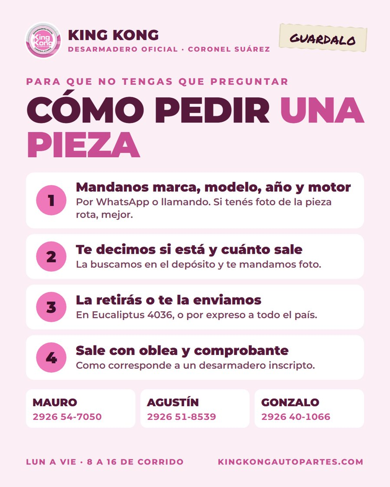
Posteo fijado
Mandanos marca, modelo, año y motor, y te decimos si tenemos la pieza y cuánto sale. 1. Comentá acá o escribile a Mauro, Agustín o Gonzalo. Si tenés foto de la pieza rota, mejor. 2. La buscamos en el depósito. 3. La retirás en Eucaliptus 4036 o te la mandamos por expreso a cualquier parte del país. 4. Sale con oblea y comprobante. Mauro 2926 54-7050 · Agustín 2926 51-8539 · Gonzalo 2926 40-1066 Lunes a viernes de 8 a 16, de corrido. #KingKongAutopartes #CoronelSuárez #Desarmadero #AutopartesUsadas
Es la placa de la semana 1, con el texto nuevo: ahora también se puede pedir comentando.
Reel · 23 s
Comentá marca, modelo y año y la pieza que buscás. Te contestamos con stock y precio. Un alternador de Marketplace y uno de desarmadero pueden ser iguales. La diferencia es la oblea: dice de qué auto salió la pieza, y con ella te llevás comprobante. Nosotros estamos inscriptos en el RUDAC, lo podés verificar en argentina.gob.ar. Eucaliptus 4036, Coronel Suárez. Envíos a todo el país. #KingKongAutopartes #Desarmadero #AutopartesUsadas #CoronelSuárez
Animado, se hace 100 % desde acá. Es el formato que más comentarios trae a los desarmaderos grandes: comparar contra la otra opción. Foto: el alternador de Clio marcado a fibrón, del sitio.
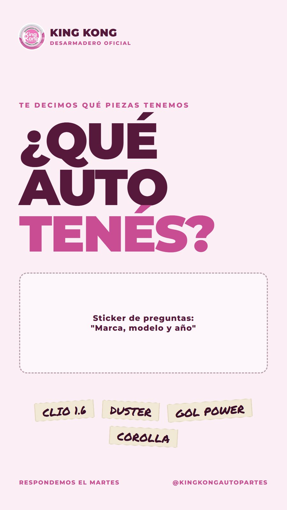
Historia · 8:30
Con la caja de preguntas. Además, todos los días hábiles sale una historia con la mejor consulta que llegó en los comentarios y su respuesta.
Reel · 23 s
¿Tenés un 207? Comentá qué pieza buscás y te contestamos con stock y precio. Entró un Peugeot 207 Compact al desarme. Ya no anda, pero el motor, las puertas y lo de adentro siguen sirviendo. Cada pieza sale con su oblea. Si lo que buscás es de otro auto, comentá igual: marca, modelo y año. #KingKongAutopartes #Peugeot207 #Desarmadero #CoronelSuárez
Con el video del 207 del Drive (sin patente a la vista). "Nuevo ingreso" con marca y modelo en grande es el formato más barato y el que nunca falla en el rubro. A confirmar: que todavía haya piezas del 207.
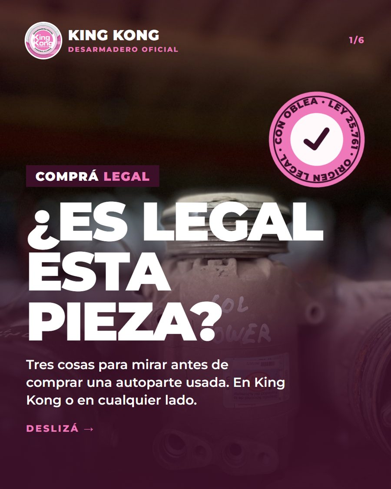
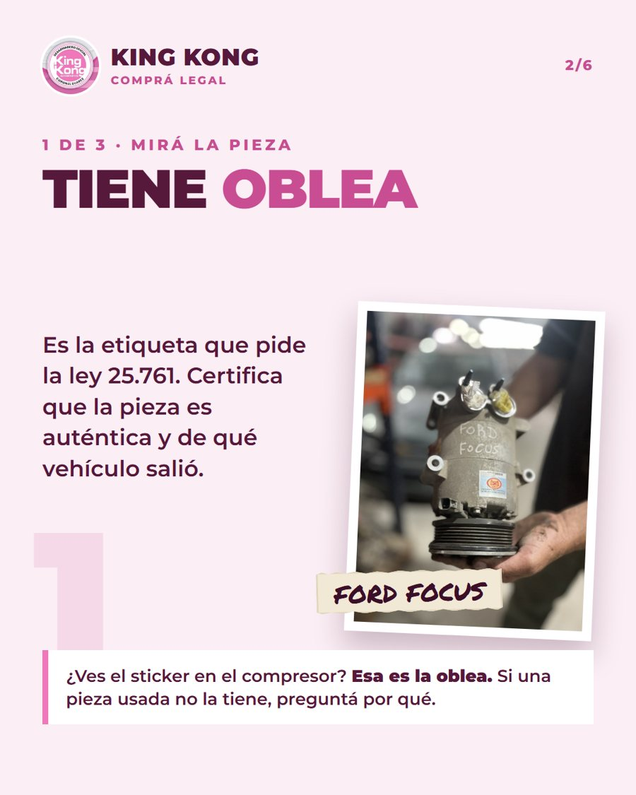
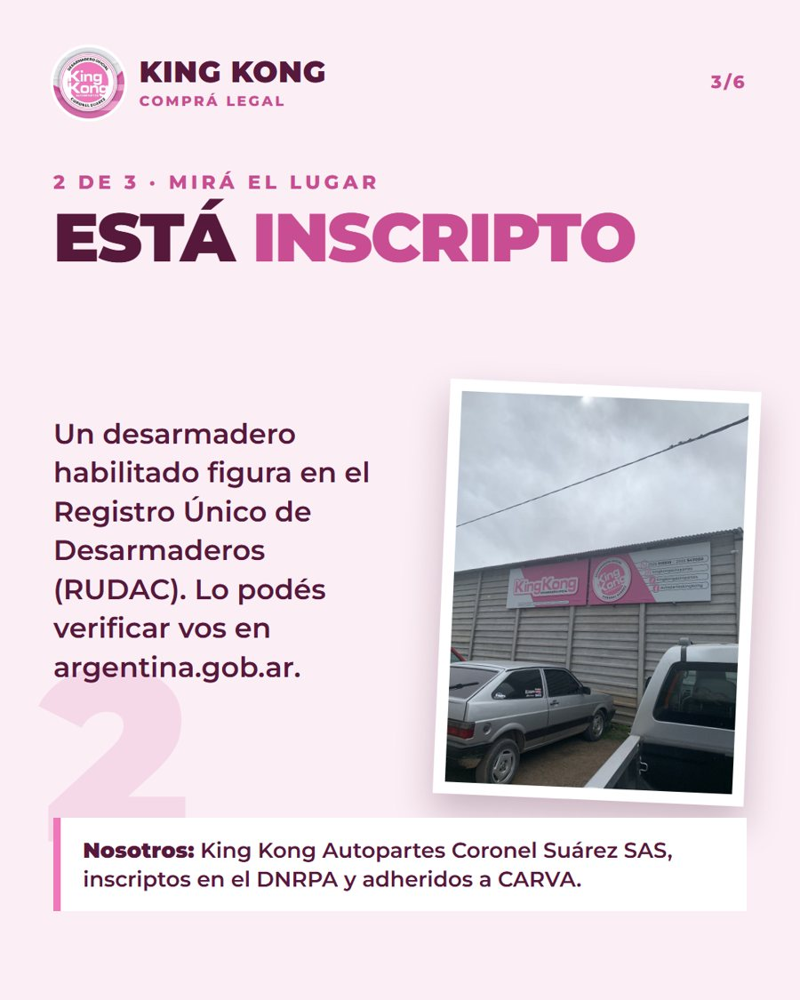
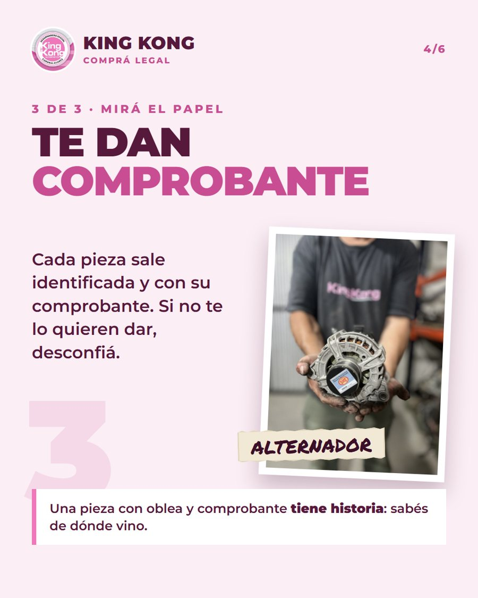
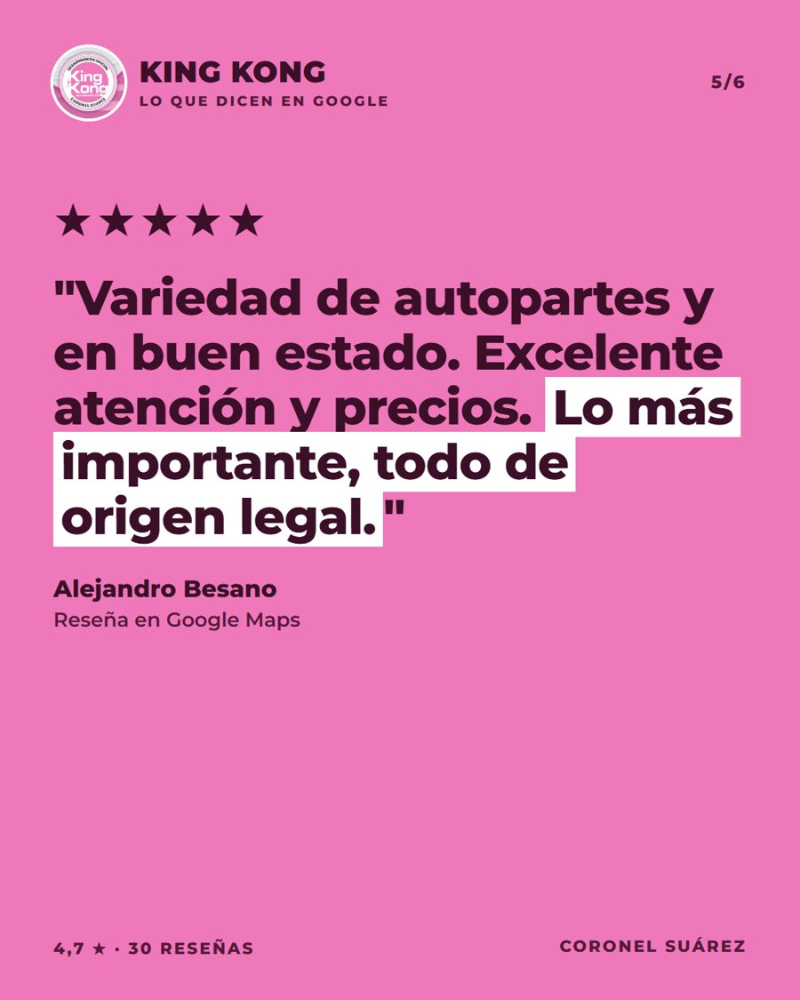
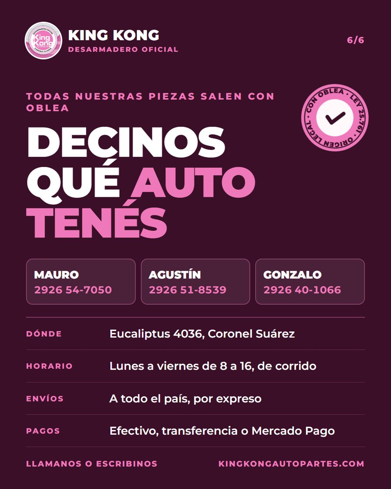
Deslizá →
Carrusel · fijado 2
Guardalo para la próxima vez que compres una pieza usada. Son tres cosas para mirar. 1. Que tenga oblea. Es la etiqueta que pide la ley 25.761: dice que la pieza es auténtica y de qué vehículo salió. 2. Que el desarmadero esté inscripto en el RUDAC. Se verifica en argentina.gob.ar. 3. Que te den comprobante. En King Kong todas las piezas salen así. ¿Buscás alguna? Comentá marca, modelo y año. #KingKongAutopartes #Desarmadero #AutopartesUsadas #CompráLegal
El carrusel de la semana 1 (ya aprobado), con el cierre nuevo.
Reel · 22 s
¿Qué pieza le falta a tu auto? Comentá marca, modelo y año. Tenemos una montaña de llaves de autos que ya no existen. Los autos no están más, pero sus piezas siguen andando en otros: motores, puertas y ópticas, entre otras. Todas con oblea. La llave, eso sí, se queda acá. #KingKongAutopartes #Desarmadero #AutopartesUsadas #CoronelSuárez
Gancho de curiosidad animado: una llave que se balancea, un contador que corre y "te quedaste 7 segundos mirando una llave". Usa la foto real de la pila de llaves.
Reel · 33 s
Comentá marca, modelo y año y te decimos si tenemos lo que buscás. Antes de llegar a la pinza, a este auto le sacamos el motor, las puertas y todo lo que todavía sirve. Cada pieza va al estante identificada y con oblea. Lo que queda se compacta y se recicla. #KingKongAutopartes #Desarmadero #Reciclaje #CoronelSuárez
El reel de la compactación de la semana 1, con el gancho nuevo arriba y el cierre que pide comentar. Arranca con la pinza aplastando el auto. A confirmar: la mano con uñas pintadas del clip de la etiqueta, si es de la ex CM, se cambia por otro clip.
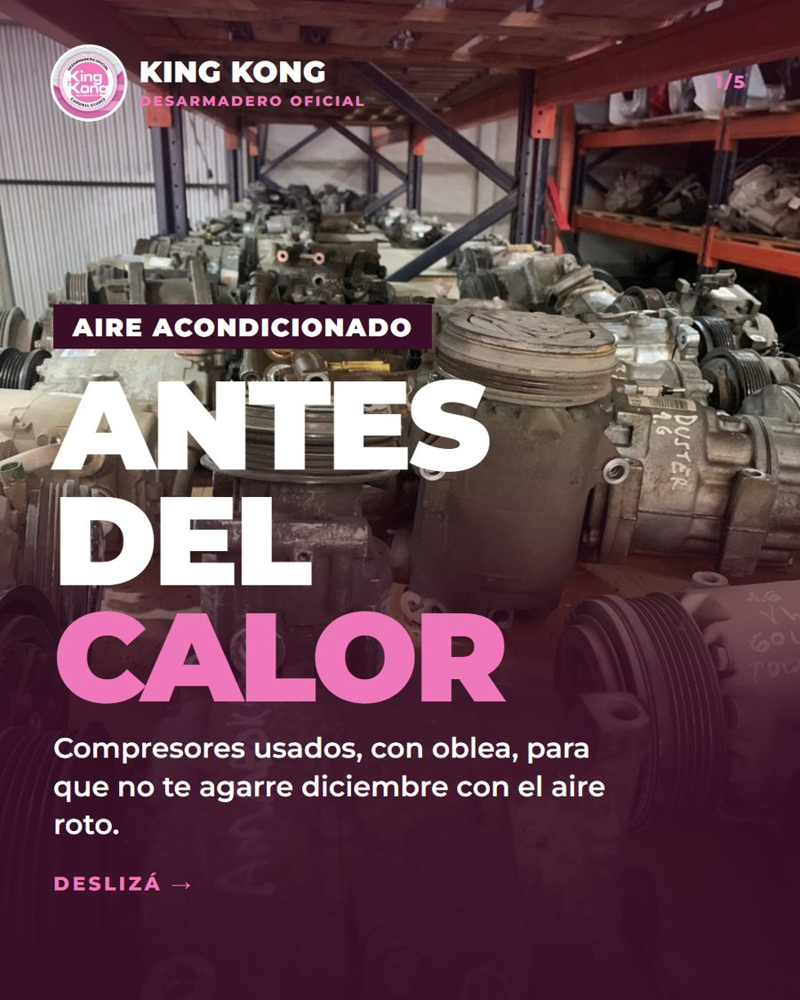
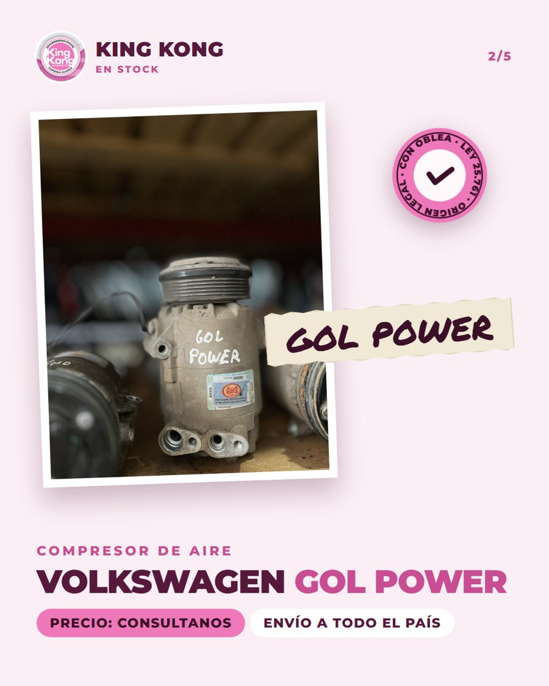
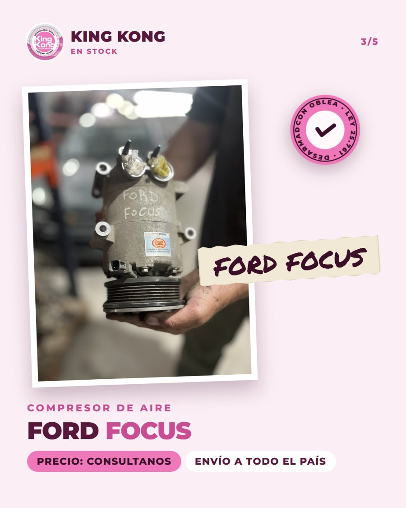
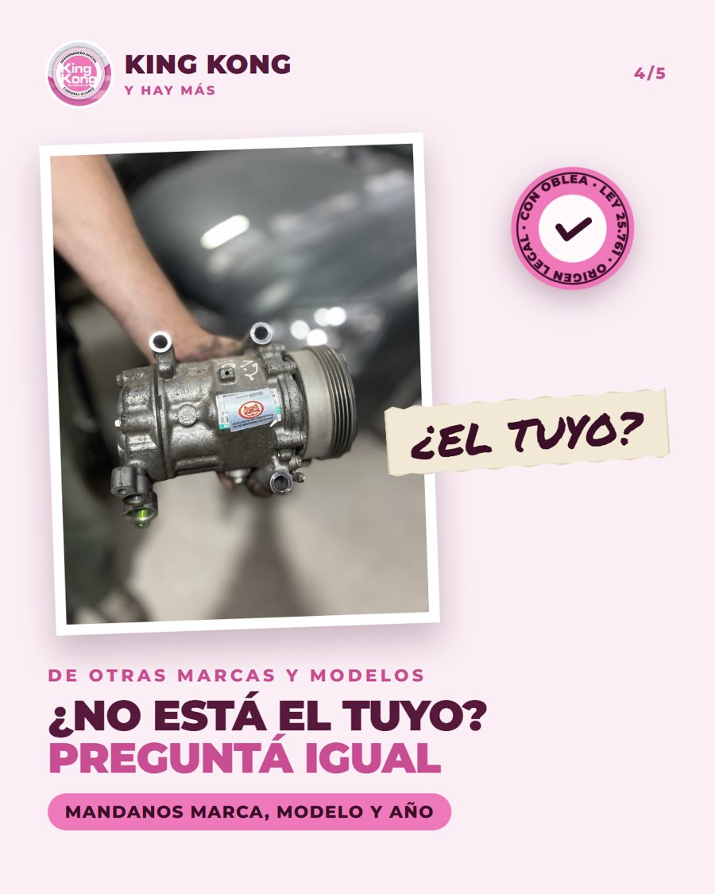
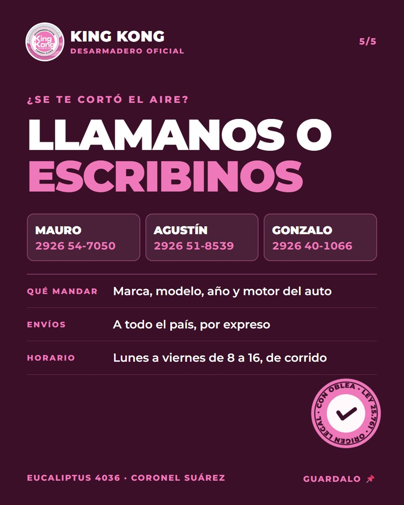
Deslizá →
Carrusel
Antes del calor: ¿qué auto tenés? Comentá marca, modelo y año y te decimos si hay compresor. En la foto hay de Gol Power y Ford Focus, y tenemos de otras marcas y modelos. Usados, con oblea, y te lo mandamos por expreso. #KingKongAutopartes #AireAcondicionado #AutopartesUsadas #CoronelSuárez ---
Es lo que hace que esto funcione. Lo hacemos desde acá, dos veces por día.